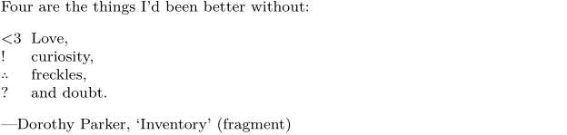
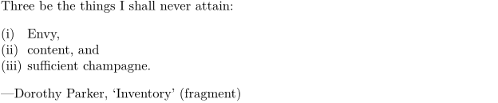
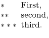
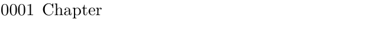

Contents
Summary
The command \defineconversion is used to define a representation of numbers for numbered elements like itemizations and headers.
Settings
Settings list
Description
Predefined conversions (selection):
or
| default | depends, mostly “Arabic” numbers | |
| n, N | numbers | “Arabic” numbers (difference?) |
| zero | “Arabic” numbers, starting with 0 | |
| o | Mediaeval numbers (oldstyle, \os) | |
| a, A | alphabetic | Latin characters (lower/upper) |
| AK = KA | Latin small caps | |
| sloveniannumerals, slovenianNumerals | Slovenian characters (Latin with č, lower/upper) | |
| spanishnumerals, spanishNumerals | Spanish characters (Latin with ñ, lower/upper) | |
| russiannumerals, russianNumerals | Russian characters (Cyrillic lower/upper) | |
| i = r, I = R | romannumerals | Roman numbers (lower/upper) |
| RK = KR | Roman numbers in small caps | |
| or | Roman numbers with continuous lines | |
| g, G | greeknumerals | Greek characters (lower/upper) |
| mathgreek | Greek lowercase characters from the math font | |
| hebrewnumerals, yiddishnumerals | Hebrew/Yiddish numbers | |
| month, month:mnem | Month names (full/abbreviated) | |
| set 0 | Symbol set for itemizations | |
| set 1 ... set 3 | Symbol sets for footnotes | |
| empty, none | ||
| continued | always “(continued)” | |
| words, Words | Numbers as words (lower/upper), so far only English |
There are many more options, e.g. for Arabic, CJK and other languages/scripts; all the character conversions are language dependent.
Examples
Define new conversion set
-
\defineconversion[inventory][<3,!,\math{\therefore},?] Four are the things I'd been better without: \startitemize[inventory, packed][stopper=, width=2em] \item Love, \item curiosity, \item freckles, \item and doubt. \stopitemize \leftaligned{---Dorothy Parker, \quote{Inventory} (fragment)}
- 
Change numbering in itemize to '(i)', '(ii)', ...
-
\defineconversion[bracketroman][(\romannumerals] Three be the things I shall never attain: \startitemize[bracketroman, packed][stopper=), width=2em] \item Envy, \item content, and \item sufficient champagne. \stopitemize \leftaligned{---Dorothy Parker, \quote{Inventory} (fragment)}
- 
Conversion set of stars
-
\defineconversion[starred][\m{*},\m{**},\m{***}] % Math mode gives better spacing, thus \m{...} \startitemize[starred,packed][stopper=,width=2.5em] \item First, \item second, \item third. \stopitemize
- 
Conversion for numbers with leading zeros
-
\startluacode interfaces.implement { name = "FourDigits", public = true, arguments = "string", actions = function(s) context("%04d",tonumber(s)) end } \stopluacode \defineconversion [FourDigits] [\FourDigits] \setuphead[chapter][conversion=FourDigits] \startchapter [title={Chapter}] \stopchapter
- 
(By Wolfgang Schuster, 2023-01-01)